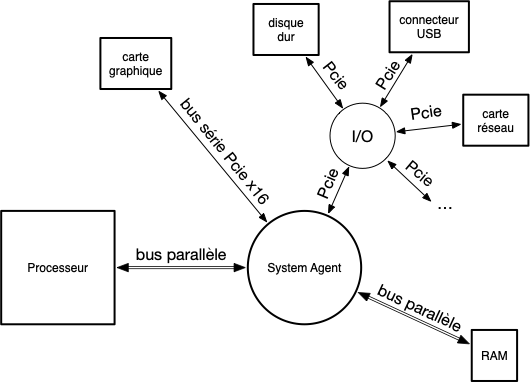

Architecture d'un ordinateur
Un ordinateur est composé de plusieurs composants qui interagissent entre eux :
- le processeur : exécute des instructions sur des variables. Instructions et variables sont prisent et manipulées dans la mémoire.
- mémoire vive : un espace de stockage rapide, mais volatile (se vide lorsque l'on éteint l'ordinateur). Peut-être vu comme un grand tableau ou chaque case est un byte. Comme on peut accéder à tout élément sans contrainte, cette mémoire est appelée RAM (pour Random Access Memory)
- périphériques, appelés device
- mémoire non volatile (stockage) : On ne peut pas toujours accéder à tout byte du tableau de stockage indépendamment. Il faut utiliser un protocole. Ces devices sont plus lent que la RAM mais sont non volatiles. Par exemple :
- disques durs : plus lent que la mémoire mais non volatile
- USB : encore plus lent qu'un disque dur mais déplaçable facilement
- réseau : encore plus lent que l'USB mais accessible de partout
- interfaces :
- entrée : clavier/souris
- sortie : écran/imprimante
- entrée/sortie : volant avec retour de force
- mémoire non volatile (stockage) : On ne peut pas toujours accéder à tout byte du tableau de stockage indépendamment. Il faut utiliser un protocole. Ces devices sont plus lent que la RAM mais sont non volatiles. Par exemple :
En regroupant tous les types de mémoires, on obtient le schéma (très) simplifié suivant :

L'architecture d'un ordinateur et les systèmes d'exploitations ont co-évolué. Les besoins des uns modifiant l'architecture des autres et réciproquement.
L'élément central qui permet à tous les composants d'un ordinateur de communiquer entre eux est la carte mère.
Carte mère
La carte mère doit rentrer dans le boîtier de l’ordinateur. Sa forme est donc importante selon qu'on ait une tour, un portable ou un mini-pc. De sa forme va dépendre les différents composant qu'on va pouvoir lui adjoindre.
Le format classique d'une tour, permettant les plus grandes cartes mères est le format ATX. Elle possède :
- un emplacement pour placer le processeur
- des emplacements pour les barrettes de RAM DIMM (ou SO-DIMM pour les portables). Ils sont spécifiques au type de RAM utilisé (DDR4 ou DDR5 actuellement).
- des ports PCIe en x4, x8 ou x16 pour brancher des périphériques. On a coutume d'y brancher des appareils nécessitant un gros débit, comme des disques durs ou la carte graphique
- des ports pour les périphériques USB
- une horloge qui permet la synchronisation des différents devices. Chaque device soit fonctionner à une fréquence qui est un multiple de la fréquence d'horloge de la carte mère
- une mémoire contenant le gestionnaire UEFI de la carte mère
Tous ces composants sont reliés au processeur via le system agent. Les connections sont fait par des bus de transmission au format PCIe (même les périphériques USB sont relié au processeur par des bus PCIe).
Vous allez trouver plein de vieilles choses sur internet :
- BIOS : n'existe plus depuis 2006, il est remplacé par l'UEFI
- northbridge/southbridge. Depuis 2019, remplacé par le system agent.
Horloge et synchronisation
Communiquer une information binaires se fait usuellement par un signal continu :
- +5v signifie un 1
- 0v signifie un 0
Une succession d'information binaire ne peut se faire qu'à intervalle donné, sinon il serait impossible de distinguer deux 1 (respectivement deux 0) de suite :
mesure : x x x x x x x
signal : __/⎺⎺⎺⎺⎺\_____/⎺⎺⎺⎺⎺⎺⎺\_____
bits : 0 1 0 0 1 1 0
La mesure est synchronisée par la fréquence de l'horloge de la carte mère (ou le plus souvent un multiple de celle-ci, car la fréquence de l'horologe est basse).
Exemple de signal synchronisé à la fréquence de l'horloge. On regarde à chaque front montant de l'horloge le signal, qui est convertit en bit :
front montant front descendant
v v
horloge : _/⎺\_/⎺\_/⎺\_/⎺\_/⎺\_/⎺\_/⎺\
signal : __/⎺⎺⎺⎺⎺\_____/⎺⎺⎺⎺⎺⎺⎺\_____
bits : 0 1 0 0 1 1 0
Si les devices transmettent leurs données à la même vitesse, mais qu'ils ne sont pas tous synchronisé avec une même horloge, il est impossible de connaître le depart de transmission et par là de connaître le message.
Enfin, pour que des devices de vitesses différentes puissent communiquer sans perte de temps, il faut que le device le plus rapide puisse communiquer à la vitesse du plus lent : il faut que toutes leurs horloges soient des multiples de l'horloge de la carte mère.
Vir ce petit tuto sur la transmission de données
Bus de communication
Le bus est le moyen de faire entrer et sortir des données d'un processeur :

Le but du bus est de véhiculer une donnée. Cette pouvant aller de 1 à plusieurs gigaoctets de bits.
Il existe deux types de transmissions, et donc deux types de bus :
- transmission série : on on transmet un bit après l'autre
- transmission parallèle : ou on transmet plusieurs bits (8, 16, 32, 64, ...) en une fois
Les deux types de transmissions ont leurs avantages et inconvénients voir cette courte vidéo, mais en gros :
- la transmission parallèle est utilisée pour de courtes distances (plus petit que la longueur d'onde de l'horloge pour éviter les problème de skew c'est à dire de désynchronisation générée par le délai de propagation variable entre les différents canaux de la communication parallèle) lorsque la vitesse est primordiale.
- la transmission série est utilisée pour des distances "longues" et pour des gain de places (moins de cables sont nécessaires)
Ce qui donne finalement le schéma de communication des processeurs actuels (par exemple l'architecture ice lake):

Les deux seuls bus en parallèles sont celui sortant du processeur et celui sortant de la mémoire RAM (leurs tailles sont variables, de 64 à 512 bits). Les autres sont tous en série :
- bus PCIe. Peuvent être plus ou moins rapide selon le nombre de lanes. Chaque lane est composée de deux fils permettant une communication en série sous la forme d'un differential signaling. Un bus PCIe 4x est composé de 4 lanes et permet d'avoir 4 canaux de transmissions simultanés. On a coutume d'utiliser un bus PCIe x16 pour la carte graphique, et des bus plus petits pour le reste (disques dur, USB, etc) pour des questions de coût.
- bus USB qui lie le device USB à son connecteur
- Ethernet qui lie le câble à la carte réseau.
UEFI
L'UEFI est un logiciel sur la carte mère permettant de :
- vérifier, synchroniser et configurer si nécessaire les devices installés sur la carte
- déterminer sur quel disque démarrer pour exécuter le système d'exploitation.
UEFI manager
L'UEFI manager permet d'avoir accès aux paramètres de l'UEFI. Il permet de configurer divers paramètres système.
Pour accéder à l'UEFI manager, il faut au boot de l'ordinateur appuyer sur une touche. Cette touche dépend de votre ordinateur et sera affichée au boot. Cela peut être F2, mais aussi ESC ou encore F11. Sur le NUC de la maison, c'est F2 au démarrage, et voici le manager qu'on obtient :

On y voit les caractéristiques du processeur (onglet de départ main).
Le deuxième onglet (advanced) montre les différents matériels branché sur la carte mère :

Pour ma part 3 disques dur :
- Un disque SSD de 1TB sur le port SATA (qui contient les données)
- deux disques un sur chaque port M2 :
- un de 1TB (contient un système Linux/ArchLinux)
- un de 240GB (contient un système Windows 11)
Le troisième onglet permet d'overclocker le processeur si on est joueur :

Le dernier onglet, boot permet de gérer le boot :

On voit que j'ai désactivé le secure boot car il ne permet pas d'exécuter tous les logiciel libres (secure signifiant approuvé par microsoft... qui refuse de signer des logiciels sous licence GPLv3) et vous aurez aussi à le faire pour booter certains disque d'installation Linux.
Lisez ce document qui explique ce qu'est le secure boot.
Plus généralement vous pouvez lire l'article complet sur l'UEFI et Linux)
En cliquant sur boot priority on voit l'ordre de boot que j'ai choisi pour l'ordinateur :

- Le disque LEXAR SSD de 1TB contenant ma distribution Linux/ArchLinux
- Le disque de 240GB contenant le système Windows 11
- l'UEFI shell qui est un programme permettant de faire des opérations très bas niveaux sur la carte mère et les disques.
On voit de plus que si une clé USB bootable est présente dans l'ordinateur au démarrage, on boot d'abord sur elle (c'est ce que genre de chose qu'il faudra faire lorsque vous voudrez installer Linux à partir d'une clé USB par exemple)
Boot
Le processus de démarrage UEFI est le suivant :
- mise sous tension de l'ordinateur
- Procédure POST qui vérifie que tout est Ok sur la carte et que les appareils qui lui sont connectés sont reconnus
- Pour chaque disque dans l'ordre de démarrage des disques :
- s'il possède une partition EFI
- on exécute le fichier
\EFI\BOOT\BOOTx64.EFIdont l'exécution charge le système d'exploitation - si le fichier ou la partition EFI n'existe pas on passe au disque suivant
Pour aller plus loin :
- interface UEFI
- partition GPT. FAT32 pour la partition EFI.
Communication processeur
La communication du processeur avec le reste du monde, c'est à dire avec le user agent qui est le point de regroupement de tous les devices, se fait uniquement avec un unique bus. Ce bus est composé de 3 canaux pour permettre d'accéder à une donnée :
- contrôle : que veut-on faire : lire (faire entrer dans le processeur)/écrire (faire sortir la donnée)
- adresse : où commence la donnée à lire/écrire
- donnée : la donnée à lire ou à écrire
La taille du canal de donnée varie selon les ordinateurs, mais une bonne approximation est de considérer qu'elle est de 64bits, transmis de façon parallèle.
canal de contrôle
Détermine :
- l'action à mener : essentiellement lire ou écrire des données, mais peut aussi être des actions de maintenance ou une demande d'interruption de la part d'un device.
- la taille des données transférées : une puissance de 2, jusqu'à la taille du canal de donnée, usuellement 64bits
canal d'adresse
La partie adresse du bus doit permettre de déterminer à la fois déterminer le device et l'endroit sur celui-ci où lire/écrire l'information. Par exemple, si la taille du bus d'adresse est de 64 bit, on peut (c'est un exemple) :
- réserver 4bits pour le choix du device (on a $2^4=16$ possibilités, de $0000$ à $1111$)
- réserver 60bits pour l'adresse ce qui fait un adressage de $2^60$ bit, donc 4503 terabyte (voir $10^{12}$ bytes). Ce qui est pas mal puisque la norme haute en RAM est actuellement 128 gigabyte ($10^{9}$ bytes).
Ce qui nous laisse la place d'accéder à tous les devices branchés :
- un byte de la mémoire RAM
- un accès série à un device :
- disque dur,
- écran,
- clavier,
- etc
Cette technique d'adressage unifiée est appelée IO memory mapping. L'intérêt est d'ajouter une couche d'indirection (rappelez vous la règle fondamentale de l’ingénierie logicielle), le processeur n'a pas à avoir plusieurs jeux d'instructions selon le device auquel il veut accéder, tout est unifié.
L'exemple précédent est très simplifié car les devices hors mémoire n'ont pas besoin de beaucoup d'adressage. Il est en effet impossible d'accéder directement à tout byte. La communication avec ces devices se fait par un protocole similaire aux protocoles de communication réseaux la communication via des paquets de taille fixe, en lecture et en écriture : l'essentiel de la communication passe par la partie donnée du bus et non la partie adresse.
Ceci pose cependant un problème car l'accès à chaque byte d'un disque dur va mobiliser le processeur et l'accès à un disque dur est relativement lent par rapport à la vitesse d'un processeur, ce qui ralentie inutilement le système puisque le processeur va passer son temps à attendre que l'accès disque soit terminé. Pour palier ce problème on utilise un procédé nommé Direct Memory Access. Par exemple pour lire des données :
- plutôt que d'envoyer les données lues au processeur, on les envoie en mémoire RAM
- plutôt que de demander 1 byte à la fois, on en demande directement 4KB (on demande une page de donnée)
- une fois la demande de lecture de la page faite par le processeur au device, le device communique directement avec la RAM via le System Agent pour effectuer le transfert byte à byte du device à la RAM
- une fois la page transférée le device génère une Interruption pour prévenir le processeur de la fin du traitement.
Ue série de vidéos explicatives sur ces mécaniques :
canal donnée
byte vers qword
alignement.
little/big endian : adresse différent de l'entier : https://fr.wikipedia.org/wiki/Boutisme
attention, ce sont les byte qui sont inversés, pas les bits (faire exemple)
Processeur
L'architecture du processeur suit toujours le modèle de Von Neumann. Par exemple le core sunny cove des architectures Ice lake d'intel se schématise encore en :

Le principe est le suivant :
- l'instruction a exécuter est lue en mémoire par la MMU (Memory Management Unit) sous la forme d'un (ou plusieurs) entiers de 64bit
- cet entier est passé à l'unité de contrôle qui la décode pour trouver l'instruction à réaliser
- cette instruction est réalisée par l'unité de calcul dans une de ses sous-unités :
- si besoin, la MMU cherchera une donnée en mémoire pour effectuer l'opération ou enverra en mémoire son résultat.
En tant que tel, un processeur n'a pas de mémoire, il ne fait qu'utiliser celle mis à sa disposition par le bus.
Instructions
Les instructions que peuvent exécuter un processeur va dépendre de son modèle. Il existe deux grandes familles de processeurs qui se distinguent par le choix des opérations qu'elles permettent :
- architecture CISC (intel et AMD). Possèdent un grand nombre d'instructions, chaque instruction étant complexe. Ceci permet de dédier de la circuiterie à chaque instruction pour en accélérer son exécution.
- architecture RISC (ARM et Apple). Un petit nombre d'instructions simples. Le petit jeu d'instruction uniformisé en pipeline permet théoriquement d'avoir une instruction par cycle. De plus la simplicité de chaque opération rend ces processeurs économe en énergie.
On s'accorde à dire que le RISC est plus rapide mais consomme plus que le RISC :
- le CISC est l'architecture reine des ordinateurs de bureaux
- le RISC est présent dans quasi tous les téléphones portables et tablettes
Les développement récents des deux architectures tend à brouiller un peu ces différences, chaque architecture empruntant à l'autre ses points forts (le CISC scinde certaines de ses instructions pour gagner en consommation et le RISC propose quelques instructions complexes pur les optimiser).
RISK vs CISC et ARM vs x86. Et une comparaison avec le petit dernier RISC-V
Pour la suite de ce cours, nous allons uniquement nous occuper d'architecture x86-64, donc CISC.
Registres
Que l'architecture soit RISC ou CISC les instructions fonctionnent sur le même principe.
Chaque instruction possède un certain nombre de paramètres et une sortie qui sont placés dans des registres. Ces registres, en nombre et en taille fixés correspondent aux variables du processeur.
Par exemple l'instruction :
ADD RAX, 42
Va ajouter 42 à la valeur du registre RAX puis placer le résultat dans le registre RAX.
On peut aussi :
ADD RAX, RDX
Qui va ajouter la valeur du registre RDX à la valeur du registre RAX puis placer le résultat dans le registre RAX.
Ou encore :
ADD RAX, [RDX]
Qui va ajouter la valeur (64bits) à l'adresse du registre RDX à la valeur du registre RAX puis placer le résultat dans le registre RAX.
Toutes les façon de faire ADD sont décrite : commande ADD.
Les registres font office d'entrées/sortie des instructions du processeur. Pour un processeur x86-64 il y a :
- 16 registres généraux de 64bits, plus ou moins à tout faire, nommés : RAX (accumulateur), RCX (compteur), RDX (données), RBX (adresse donnée), RSP (adresse pile courante), RBP (adresse pile base), RSI (adresse source), RDI (adresse destination), R8 à R15 (registres fourre-tout). Ces registres se divisent en bouts plus petits. Par exemple le registre RAX se décompose en :
- EAX (les 32 premiers bits)
- AX (les 16 premiers bits)
- AL (les 8 premiers bits) et AH (les 8 suivants)
- 1 registre d'état de 32bits. Utilisé pour stocker des résultats annexes d'une opérations. Par exemple s'il y a eu une retenue, une comparaison qui a fait 0, un résultat négatif, etc.
- 1 registre d'instruction EIP qui contient l'adresse de la prochaine instruction à exécuter
- 2 registres utilisés par le système d'exploitation FS et GS.
TBD registres vectoriels de 128bit.
Il existe également des registres de segments qui ne sont plus utilisés : SS, CS, DS et ES. Ils restent présent pour des raisons de compatibilité mais valent tout le temps 0.
opcode
Un ordinateur ne comprend par l'instruction ADD RAX, 42, il ne comprend que des nombres. L'instruction précédente, en assembleur, est donc une abstraction pour être lue par des humains. Le processeur lie des opcodes, c'est à dire des traduction des instructions en nombres.
Utilisez le site ci-après pour connaître l'opcode de l'instruction ADD RAX, 42 :
https://defuse.ca/online-x86-assembler.htm
Attention au fait qu'il faut que vous soyez en x64, RAX n'étant pas défini en 32bits.
Que fait l'instruction : MOV RAX, 0 ? Et celle ci : XOR RAX, RAX ?
Quel est l'instruction à privilégier ?
solution
solution
Les deux instructions font la même chose, elles place 0 dans RAX. Mais la seconde à un opcode plus court que la première, c'est pourquoi vous verrez souvent la seconde instruction lorsque vous décompilez du code.
Caches
Pour la même raison que les échange entre devices et processeurs se font par page (lenteur relative du device par rapport au processeur), on tente de limiter au maximum les accès à la mémoire pour le traitement des instructions.
TBD : aussi utile pour le DMA, comme c'est en cache, le processeur peut travailler sans avoir accès au device qui pendant ce temps la peut tranquillement faire du dma
TBD les vérification pour passer par le cache avant d'aller chercher la mémoire sont efficace depend de la vitesse de calcul vs l'acces. 100 et 50x plus vite ?
Principe cache.
L1 petit et L2 plus gros
Comment on fait en vrai. Avec différence si instruction ou donnée
conséquences sur le code : les données accédées proches doivent être proche. Ex du tableau d'entier en python ou avec numpy.
Est mis en place
L2 et L1
TBD schéma
TBD archi de la mémoire pour rapidité
L1 et l2 cache. Expliquer comment c'est organisé ?
donner les vitesses de chaque mémoire.
Conséquence :Attention au défaut de cache : données et code dans des mémoires contiguë pour limiter les défaut de cache au maximum.
Un processeur n'a pas de mémoire proprement dite. De nombreux caches sont mis en oeuvre pour accélérer les I/O (Memory hierarchy. Plus on va vite plus c'est cher.)
Les CPU actuels ont plusieurs CORE qui sont autant de processeur partageant la mémoire.
Mémoire
Une partie du processeur est dédiée à la gestion de la mémoire.
context switching
Le processeur n'a pas de mémoire. Son état est déterminé par :
- la valeur de ses registres
- la table des addresses de la MMU
TBD facile de changer de contexte. On vide le cache, puis on remet la table et les valeurs des registres.
mode noyau / utilisateur
N'existe plus pour les x64 (long mode)
https://en.wikipedia.org/wiki/Protection_ring
https://en.wikipedia.org/wiki/Protected_mode
La mémoire est séparée en 4 cercles : du 0 au 3.
- Le ring 0, qui a tout les droit est souvent appelé noyau
- Le ring 3, qui en a le moins est souvent appelé utilisateur.
Une instruction prise dans une mémoire utilisateur ne peut accéder à une case mémoire noyau. Ceci permet de sécuriser les accès.
Passer d'un mode à l'autre se fait avec un instruction nommée
Paging
https://en.wikipedia.org/wiki/Page_table#Page_table_entry
Conversion d'une adresse en une autre. Adresse valide ou pas, si pas valide interruption
Si pas valide : exception page-fault.
https://www.youtube.com/watch?v=sGHYRr31BPE&list=PLhy9gU5W1fvUND_5mdpbNVHC1WCIaABbP&index=23
permettant d'être multi-tâche.
On (le noyau) peut changer la table pour changer tout le mapping
plus besoin de protected mode ou de ring. Le page-fault appelle le noyau
https://fr.wikipedia.org/wiki/Translation_lookaside_buffer
interruptions
TBD : interruption table
https://wiki.osdev.org/Interrupt
- pour le matériel
- pour la sécurité :
- pour le multi-tache : mapping/rappel le noyau sous les k cycle pour gérer l'ordonnancement
Version détaillée